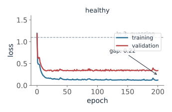
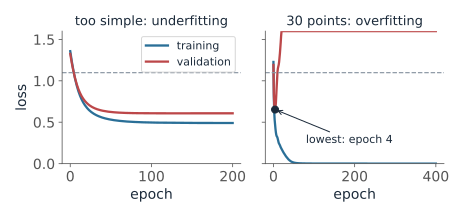
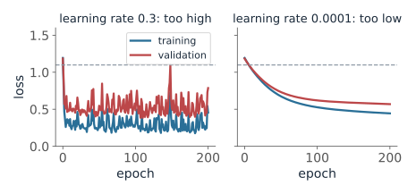
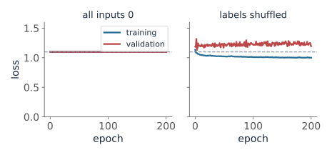
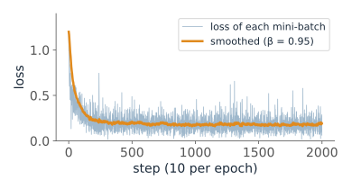
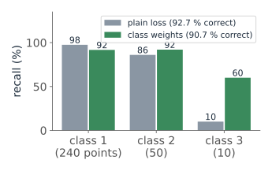

The training and validation loss, plotted against the epoch, are the main instrument for seeing what training does. This unit is a field guide:
Slides titled The math give the formulas and proofs; the ideas are complete without them.
A network with two hidden layers (32 units each), Adam with learning rate 0.01, a little weight decay:
Final accuracy: 96 % training, 89 % validation (the classes overlap, so 100 % is impossible).

Underfitting (left): a linear classifier on the spiral. Both losses level off high and together (0.49 and 0.61). The model cannot express the boundary: train longer and nothing changes. Fix: a larger model, better features.
Overfitting (right): 30 training points and a large network (two layers of 64). The training loss goes to 0; the validation loss is lowest at epoch 4 (0.65), then climbs to 4.6. Fix: more data, augmentation, weight decay, early stopping.

Too high (left, Adam 0.3): a fast first drop, then the loss jumps up and down and never settles; validation is noisier still. Each step overshoots the valley (optimisers unit). In worse cases the loss explodes to NaN.
Too low (right, Adam 0.0001): smooth, together, and still falling at the end: training stopped long before it was done. Easy to mistake for underfitting: the test is whether the curves are still falling.
Fix: try learning rates a factor 3–10 apart on short runs; use a schedule.

All inputs 0 (left: the images were never loaded, or divided by 255 twice): both losses sit at exactly 1.0986 = ln 3 from the first epoch. The network can only learn how common each class is.
Labels shuffled against the inputs (right: a sorting bug, a misaligned file list): the training loss creeps below ln 3 (memorising nonsense), the validation loss stays above it. Validation accuracy 22 %, worse than guessing.
A loss near \ln K that will not move: check the data before the model.

A network that ignores its input can still learn a constant output: class probabilities q_k for every example. With class frequencies f_k, its mean cross-entropy is
\mathcal L(q) = -\sum_k f_k\ln q_k, \qquad \text{minimal at } q_k = f_k: \quad \mathcal L^* = -\sum_k f_k\ln f_k = H(f)
Curves per epoch (on the whole training and validation sets) are smooth. Curves per mini-batch are noisy: each batch of 32 points is different.
The healthy run of the course code, 2000 steps: in the second half the batch losses range from 0.02 to 0.66.
A moving average shows the trend: s_t = \beta s_{t-1} + (1 - \beta)x_t; with \beta = 0.95 the second half stays between 0.16 and 0.20.
Do not react to one bad batch; do react to a trend.

The same spiral with 240, 50 and 10 points of the three classes (training and validation alike). Always answering “class 1” is already 80 % correct.
With imbalance, look at the recall of each class (or a confusion matrix, F1 per class), not the accuracy.

The cheapest test of the whole pipeline (course code, the healthy network, 300 steps on the same 8 examples):
| loss at step 0 | after 300 steps | correct | |
|---|---|---|---|
| 8 examples | 1.102 | 0.0003 | 100 % |
| the same 8, inputs 0 (the bug) | 1.099 | 1.082 | 38 % |
best = infinity; waited = 0
for each epoch:
train one epoch
v = loss on the validation set
if v < best:
best = v; save the weights; waited = 0
else:
waited = waited + 1
if waited ≥ patience: stop
use the saved weights| Curves | Diagnosis | First thing to try |
|---|---|---|
| fall fast, flatten, close together | healthy | nothing |
| level off high, together | underfitting | larger model |
| training → 0, validation turns up | overfitting | more data, augmentation, early stopping |
| jumpy, never settle | learning rate too high | lower it, schedule |
| smooth, still falling at the end | learning rate too low | raise it, train longer |
| stuck exactly at \ln K | inputs carry nothing | check the data loading |
| training below, validation above \ln K | labels do not match inputs | check the pairing |
| healthy, but one class never found | imbalance | recall per class, class weights |
Next: the evaluation day: measuring how good the trained network really is.